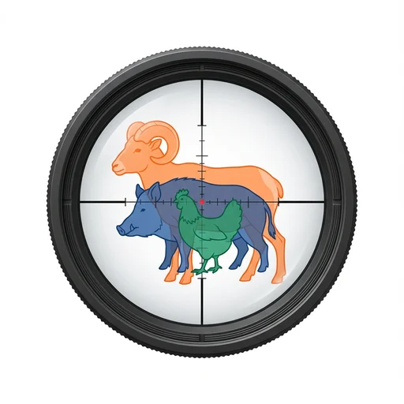
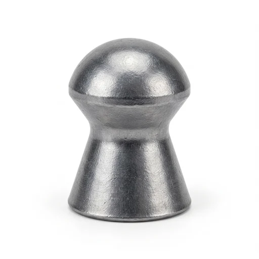

Memuat foto…
Punggung dan kenyamanan postur
Posisi badan sedikit condong ke belakang dengan panggul maju untuk membentuk tumpuan yang seimbang. Lengkungan punggung tetap dalam batas nyaman dan tidak dibuat berlebihan.
Penanda menunjukkan area punggung. Perhatikan hubungannya dengan bahu dan panggul saat mempertahankan posisi berdiri.
02 · Tahapan Pergerakan Pelatuk (A → B → C)
Memahami tahapan pergerakan pelatuk
Pilih tahap A, B, atau C untuk memahami pergerakan pelatuk sebelum dan setelah pelepasan. Tekan dan tahan tombol pelatuk atau putar otomatis untuk mengikuti kurva ilustrasi.
A · Tarikan awal (Take-up)
Pergerakan awal pelatuk sebelum tahanan mulai terasa. Tahap ini mendahului pergerakan menuju titik pelepasan.
Diagram batang A → B → C & catatan model
Urutan pergerakan pelatuk (A → B → C)
A, B, dan C menunjukkan urutan pergerakan. Panjang bagian pada gambar tidak mewakili jarak atau setelan pelatuk tertentu.
Kurva memperlihatkan tarikan awal (A), pergerakan menuju pelepasan (B), titik pelepasan, lalu gerakan lanjutan (C). Bentuk garis membantu menjelaskan tahapan dan bukan rekaman gaya, waktu, atau performa atlet.
03 · Posisi Mata, Lensa Okuler & Eye Relief
Jarak mata dan lensa teleskop
Ubah jarak, tinggi, atau posisi mata ke samping, lalu amati perubahan area terang dan bayangan di tepi lensa. Angka merupakan contoh ilustrasi, bukan rekomendasi setelan.
Cara membaca pandangan melalui lensa
01 · Jarak mata
Jarak mata adalah jarak antara mata dan okuler, yaitu lensa yang dekat dengan mata. Pada ilustrasi ini, perubahan jarak mengubah luas area terang yang terlihat.
02 · Tinggi mata
Kontrol tinggi menggambarkan perubahan posisi mata ke atas atau ke bawah terhadap sumbu teleskop. Amati perubahan letak area terang dan bayangan di tepi lensa.
03 · Posisi ke samping
Kontrol ke samping menggambarkan pergeseran mata ke kiri atau ke kanan. Area terang menunjukkan bagian pandangan yang terlihat, sedangkan area gelap menggambarkan bayangan tepi.
Proporsi reticle & peluru diabolo 4,5 mm

Garis silang di tengah membantu membandingkan posisi bentuk siluet. Ukuran gambar bukan skala sasaran sebenarnya.

Gambar memperlihatkan kepala membulat, bagian tengah yang menyempit, dan bagian belakang yang melebar. Bentuk ini membantu mengenali pellet diabolo.
Ikuti jadwal dan cara perawatan dalam manual pabrikan. Gambar di halaman ini hanya membantu mengenali bagian peralatan.
Sandaran Pipi
Titik 02 menandai sandaran pipi di atas popor. Bagian ini menjadi tempat pipi bertumpu ketika mata menghadap teleskop.
Desktop: Geser mouse di scope · Spasi Tahan Nafas · ↑ / ↓ Turret